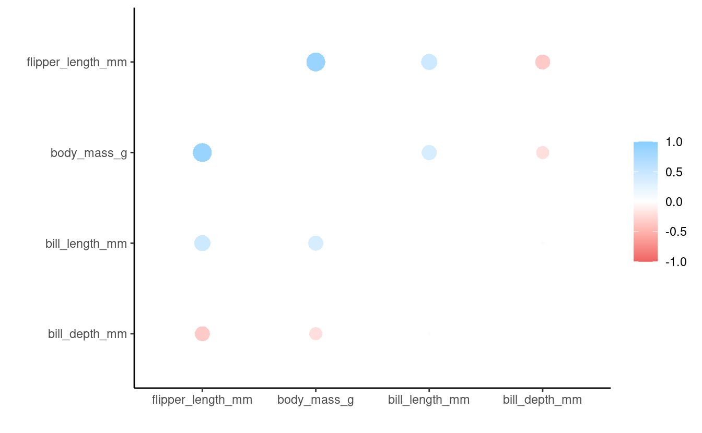

S03E05: Introduction to correlation
Using the corrr package
Housekeeping
New to Code Club?
Check out the Code Club Computer Setup instructions, which also has pointers for if you’re new to R or RStudio. A few related Code Club sessions include:
What will we go over today
- We will introduce correlation.
- Learn using the
corrr()package.
R packages we will use
- corrr – for correlation analysis
- palmerpenguins – for the penguins data
- tidyverse – for data wrangling
1 - What is correlation?
Correlation is a statistical method used to assess a linear association between two continuous variables. It is measured by a statistic called the correlation coefficient, which represents the strength of the linear association between the variables in question. It is a dimensionless quantity that takes a value in the range −1 to +1. A correlation coefficient of zero indicates that no linear relationship exists between two continuous variables, and a correlation coefficient of −1 or +1 indicates a perfect linear relationship. (The stronger the correlation, the closer the correlation coefficient comes to −1 and +1.)
Positive coefficient: If the coefficient is a positive number, the variables are positively related (i.e., as the value of one variable goes up, the value of the other also tends to do so).
Negative coefficient: If the coefficient is a negative number, the variables are inversely related (i.e., as the value of one variable goes up, the value of the other tends to go down).
Types of correlation coefficients: There are two main types of correlation coefficients, Pearson’s correlation coefficient and Spearman’s rank correlation coefficient. The correct usage of correlation coefficient type depends on the types of variables being studied.
-
Pearson’s correlation coefficient: Pearson’s correlation coefficient is denoted as ϱ for a population parameter and as r for a sample statistic. It is used when both variables being studied are normally distributed.
-
Spearman’s rank correlation coefficient: Spearman’s rank correlation coefficient is denoted as ϱs for a population parameter and as rs for a sample statistic. It is appropriate when one or both variables are skewed or ordinal.
Rule of thumb for interpreting the size of a correlation coefficient
- .90 to 1.00 (−.90 to −1.00) – Very high positive (negative) correlation
- .70 to .90 (−.70 to −.90) – High positive (negative) correlation
- .50 to .70 (−.50 to −.70) – Moderate positive (negative) correlation
- .30 to .50 (−.30 to −.50) – Low positive (negative) correlation
- .00 to .30 (.00 to −.30) – Negligible correlation
2 - The corrr package and our data
The corrr package is a tool for exploring correlations. It makes it easy to perform routine tasks when exploring correlation matrices such as ignoring the diagonal, focusing on the correlations of certain variables against others, or rearranging and visualizing the matrix in terms of the strength of the correlations. The corrr package exists within the Comprehensive R Archive Network, or CRAN.
Let’s install it – we only need to do this once:
install.packages("corrr")To use the corrr package, we need to load it up using library(). We also need to load the tidyverse since we will be using it later:
library(corrr)
library(tidyverse)
#> ── Attaching packages ─────────────────────────────────────── tidyverse 1.3.1 ──
#> ✔ ggplot2 3.3.5 ✔ purrr 0.3.4
#> ✔ tibble 3.1.6 ✔ dplyr 1.0.7
#> ✔ tidyr 1.2.0 ✔ stringr 1.4.0
#> ✔ readr 2.1.2 ✔ forcats 0.5.1
#> ── Conflicts ────────────────────────────────────────── tidyverse_conflicts() ──
#> ✖ dplyr::filter() masks stats::filter()
#> ✖ dplyr::lag() masks stats::lag()Let’s get set up and grab some data to work with.
We will use the same dataset palmerpenguins used in the previous weeks.
If you didn’t install this package previously, please do so now:
install.packages("palmerpenguins")Then, to use the package, we need to use the function library() to load it:
The data we will use today is a dataframe called penguins, which we reference after loading the package. We will look at the structure of the data:
# look at the first 10 rows, all columns
head(penguins, 10)
#> # A tibble: 10 × 8
#> species island bill_length_mm bill_depth_mm flipper_length_mm body_mass_g
#> <fct> <fct> <dbl> <dbl> <int> <int>
#> 1 Adelie Torgersen 39.1 18.7 181 3750
#> 2 Adelie Torgersen 39.5 17.4 186 3800
#> 3 Adelie Torgersen 40.3 18 195 3250
#> 4 Adelie Torgersen NA NA NA NA
#> 5 Adelie Torgersen 36.7 19.3 193 3450
#> 6 Adelie Torgersen 39.3 20.6 190 3650
#> 7 Adelie Torgersen 38.9 17.8 181 3625
#> 8 Adelie Torgersen 39.2 19.6 195 4675
#> 9 Adelie Torgersen 34.1 18.1 193 3475
#> 10 Adelie Torgersen 42 20.2 190 4250
#> # … with 2 more variables: sex <fct>, year <int>
# check the structure of penguins_data
# glimpse() which is a part of dplyr functions
# similarly to str() and can be used interchangeably
glimpse(penguins)
#> Rows: 344
#> Columns: 8
#> $ species <fct> Adelie, Adelie, Adelie, Adelie, Adelie, Adelie, Adel…
#> $ island <fct> Torgersen, Torgersen, Torgersen, Torgersen, Torgerse…
#> $ bill_length_mm <dbl> 39.1, 39.5, 40.3, NA, 36.7, 39.3, 38.9, 39.2, 34.1, …
#> $ bill_depth_mm <dbl> 18.7, 17.4, 18.0, NA, 19.3, 20.6, 17.8, 19.6, 18.1, …
#> $ flipper_length_mm <int> 181, 186, 195, NA, 193, 190, 181, 195, 193, 190, 186…
#> $ body_mass_g <int> 3750, 3800, 3250, NA, 3450, 3650, 3625, 4675, 3475, …
#> $ sex <fct> male, female, female, NA, female, male, female, male…
#> $ year <int> 2007, 2007, 2007, 2007, 2007, 2007, 2007, 2007, 2007…Okay, now we have a sense of what the penguins dataset is.
2 - Basic usage of the corrr package
Now we want to use the corrr package to correlate variables in the penguins dataframe. The corrr package uses the correlate() function and returns correlation results in a tibble output.
Now let’s select variables from the penguins dataframe using the pipe operator %>% and the select() function. We then specify the name of the variables that we want to select. In this example, we are selecting variables bill_length_mm, bill_depth_mm, flipper_length_mm, and body_mass_g.
Then, we will compute correlations among the variables:
penguins_cor <- penguins %>% # Take penguins_data
select(bill_length_mm, bill_depth_mm, flipper_length_mm, body_mass_g) %>%
correlate() # Select variables and calculate their correlations
#>
#> Correlation method: 'pearson'
#> Missing treated using: 'pairwise.complete.obs'
penguins_cor # Correlation results in tibble
#> # A tibble: 4 × 5
#> term bill_length_mm bill_depth_mm flipper_length_mm body_mass_g
#> <chr> <dbl> <dbl> <dbl> <dbl>
#> 1 bill_length_mm NA -0.235 0.656 0.595
#> 2 bill_depth_mm -0.235 NA -0.584 -0.472
#> 3 flipper_length_mm 0.656 -0.584 NA 0.871
#> 4 body_mass_g 0.595 -0.472 0.871 NAThe output of the correlate() function can be piped (%>%) to:
- The
shave()andrearrange()functions for internal changes - The
focus(), andstretch()functions to reshape the structure - And the
rplot(),fashion(), andnetwork_plot()for visualizations.
Let us start with internal changes.
- The
shave()function removes values of the upper or lower triangle and sets them toNA. - The
rearrange()function arranges the columns and rows based on correlation strengths.
We can apply the shave() function to remove the top triangle:
penguins_cor %>% # Take penguins_cor results
shave() # Remove the upper triangle
#> # A tibble: 4 × 5
#> term bill_length_mm bill_depth_mm flipper_length_mm body_mass_g
#> <chr> <dbl> <dbl> <dbl> <dbl>
#> 1 bill_length_mm NA NA NA NA
#> 2 bill_depth_mm -0.235 NA NA NA
#> 3 flipper_length_mm 0.656 -0.584 NA NA
#> 4 body_mass_g 0.595 -0.472 0.871 NAYou can see that the values in the upper triangle have been replaced by NAs. Now let us remove NAs by using the fashion() function:
penguins_cor %>% # Take penguins_cor results
shave %>% # Remove the upper triangle
fashion() # Remove NAs
#> term bill_length_mm bill_depth_mm flipper_length_mm body_mass_g
#> 1 bill_length_mm
#> 2 bill_depth_mm -.24
#> 3 flipper_length_mm .66 -.58
#> 4 body_mass_g .60 -.47 .87You can see that the NAs have been removed, and we have a clean tibble (dataframe).
Now, let’s rearrange columns based on correlation strengths:
penguins_cor %>% # Take penguins_cor results
rearrange %>% # Rearrange based on correlation strengths
shave %>% # Remove the upper triangle
fashion() # Remove NAs
#> term flipper_length_mm body_mass_g bill_length_mm bill_depth_mm
#> 1 flipper_length_mm
#> 2 body_mass_g .87
#> 3 bill_length_mm .66 .60
#> 4 bill_depth_mm -.58 -.47 -.24You can see that the values are arranged based on correlation strengths.
Breakout session 1
-
From the
penguinsdataframe, create a new dataset calledpenguins_biscoeby selecting only the penguins from the island of Biscoe. -
In the
penguins_biscoedataframe, what are the correlations betweenbill_length_mm,bill_depth_mm,flipper_length_mm, andyear? -
Remove the upper triangle and
NAs from the results, and arrange based on correlation strengths.
Solution (click here)
Select the penguins from the island of Biscoe:
penguins_biscoe <- penguins %>% # Save results in new object
filter(island == "Biscoe") # Select data from only Biscoe island Calculate correlation of the variables in penguins_biscoe:
biscoe_cor <- penguins_biscoe %>%
# select bill_length_mm, bill_depth_mm, flipper_length_mm, and year
select(bill_length_mm, bill_depth_mm, flipper_length_mm, year) %>%
correlate() # Calculate correlation
#>
#> Correlation method: 'pearson'
#> Missing treated using: 'pairwise.complete.obs'
biscoe_cor
#> # A tibble: 4 × 5
#> term bill_length_mm bill_depth_mm flipper_length_mm year
#> <chr> <dbl> <dbl> <dbl> <dbl>
#> 1 bill_length_mm NA -0.444 0.866 0.0968
#> 2 bill_depth_mm -0.444 NA -0.579 0.138
#> 3 flipper_length_mm 0.866 -0.579 NA 0.105
#> 4 year 0.0968 0.138 0.105 NATo remove the upper triangle and rearrange the results:
biscoe_cor %>% # Take biscoe_cor results
rearrange() %>% # Rearrange based on correlation strengths
shave() %>% # Remove the upper triangle
fashion() # Remove NAs
#> term flipper_length_mm bill_length_mm year bill_depth_mm
#> 1 flipper_length_mm
#> 2 bill_length_mm .87
#> 3 year .11 .10
#> 4 bill_depth_mm -.58 -.44 .143 - Reshaping and visualizations
The output of the correlate() function can also be piped to:
- The
focus()andstretch()functions to reshape the structure - And the
rplot(), andnetwork_plot()for visualizations.
Reshape structure:
- The
focus()function select columns or rows based on the variable specified. - The
stretch()converts correction results from a tibble into a long format.
Visualizations:
- The
rplot()function plots correlation results - The
network_plot()function plots a point for each variable, joined by paths for correlations
Let use the stretch() function to convert our correlation results penguins_cor into a long format:
penguins_cor %>%
stretch()
#> # A tibble: 16 × 3
#> x y r
#> <chr> <chr> <dbl>
#> 1 bill_length_mm bill_length_mm NA
#> 2 bill_length_mm bill_depth_mm -0.235
#> 3 bill_length_mm flipper_length_mm 0.656
#> 4 bill_length_mm body_mass_g 0.595
#> 5 bill_depth_mm bill_length_mm -0.235
#> 6 bill_depth_mm bill_depth_mm NA
#> 7 bill_depth_mm flipper_length_mm -0.584
#> 8 bill_depth_mm body_mass_g -0.472
#> 9 flipper_length_mm bill_length_mm 0.656
#> 10 flipper_length_mm bill_depth_mm -0.584
#> 11 flipper_length_mm flipper_length_mm NA
#> 12 flipper_length_mm body_mass_g 0.871
#> 13 body_mass_g bill_length_mm 0.595
#> 14 body_mass_g bill_depth_mm -0.472
#> 15 body_mass_g flipper_length_mm 0.871
#> 16 body_mass_g body_mass_g NAYou can see that the results are coverted into a long format.
We can also select a column we are interested in. Let us select only correlation between “bill_depth_mm” and the rest of the variables.
penguins_cor %>%
focus("bill_depth_mm")
#> # A tibble: 3 × 2
#> term bill_depth_mm
#> <chr> <dbl>
#> 1 bill_length_mm -0.235
#> 2 flipper_length_mm -0.584
#> 3 body_mass_g -0.472You can see that we selected only the correlations between bill_depth_mm and other variables.
We can now visualize the results:
penguins_cor %>%
rearrange() %>% # Rearrange based on correlation strengths
rplot() # Plot
#> Don't know how to automatically pick scale for object of type noquote. Defaulting to continuous.

We plotted based on correlation strengths.
Breakout session 2
Use the dataframe (penguins_biscoe) you created in Breakout session 1 to:
-
Calculate correlations among the variables, and present the results in a long format
-
Select the correlations that include
year -
Plot a correlation graph based on correlation strengths
Solution (click here)
biscoe_cor <- penguins_biscoe %>%
select(bill_length_mm, bill_depth_mm, flipper_length_mm, year) %>%
correlate()
#>
#> Correlation method: 'pearson'
#> Missing treated using: 'pairwise.complete.obs'
biscoe_cor %>%
stretch()
#> # A tibble: 16 × 3
#> x y r
#> <chr> <chr> <dbl>
#> 1 bill_length_mm bill_length_mm NA
#> 2 bill_length_mm bill_depth_mm -0.444
#> 3 bill_length_mm flipper_length_mm 0.866
#> 4 bill_length_mm year 0.0968
#> 5 bill_depth_mm bill_length_mm -0.444
#> 6 bill_depth_mm bill_depth_mm NA
#> 7 bill_depth_mm flipper_length_mm -0.579
#> 8 bill_depth_mm year 0.138
#> 9 flipper_length_mm bill_length_mm 0.866
#> 10 flipper_length_mm bill_depth_mm -0.579
#> 11 flipper_length_mm flipper_length_mm NA
#> 12 flipper_length_mm year 0.105
#> 13 year bill_length_mm 0.0968
#> 14 year bill_depth_mm 0.138
#> 15 year flipper_length_mm 0.105
#> 16 year year NAYou can see that results are in a long format.
biscoe_cor %>%
focus("year")
#> # A tibble: 3 × 2
#> term year
#> <chr> <dbl>
#> 1 bill_length_mm 0.0968
#> 2 bill_depth_mm 0.138
#> 3 flipper_length_mm 0.105Correlations with year: